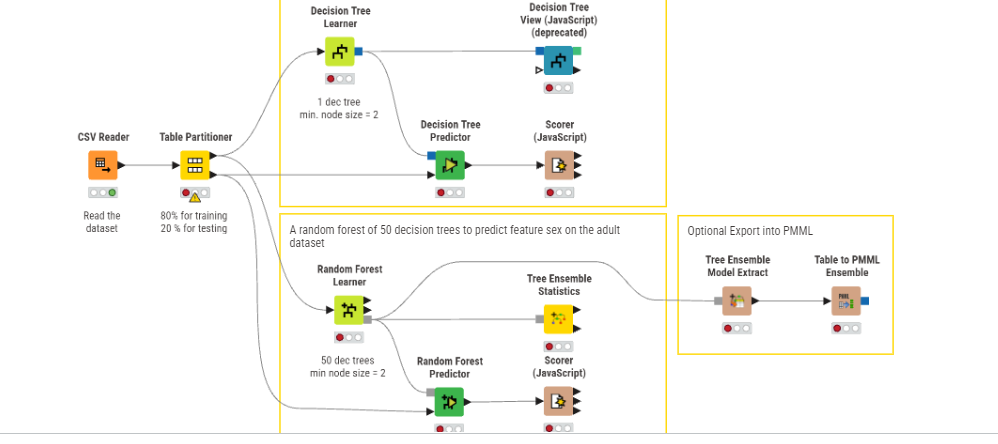
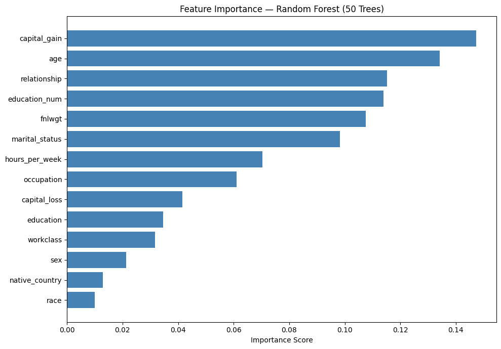
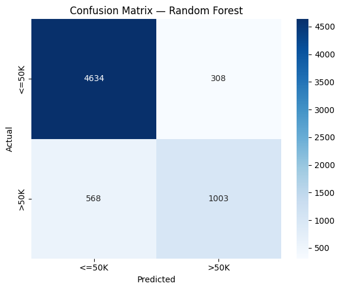

Analisis Data Menggunakan Random Forest#
Studi Kasus: Adult Income Dataset#
Proyek: Klasifikasi Pendapatan menggunakan Decision Tree & Random Forest
Dataset: Adult Census Income (UCI Machine Learning Repository)
Tools: KNIME Analytics Platform + Python (Scikit-learn)
Target Variabel:income— apakah seseorang berpendapatan<=50Katau>50Kper tahun
📋 Daftar Isi#
1. Pendahuluan#
Proyek ini membangun sistem klasifikasi untuk memprediksi apakah pendapatan seseorang melebihi $50.000 per tahun berdasarkan data sensus. Dua model digunakan dan dibandingkan:
Decision Tree — model tunggal berbasis pohon keputusan
Random Forest — ensemble dari 50 pohon keputusan
Random Forest dipilih sebagai model utama karena kemampuannya mengatasi overfitting yang sering terjadi pada Decision Tree tunggal, serta menghasilkan akurasi yang lebih stabil dan robust.
2. Dataset#
2.1 Informasi Umum#
Properti |
Detail |
|---|---|
Sumber |
UCI Machine Learning Repository — Adult Dataset |
Jumlah Record |
32.561 baris |
Jumlah Fitur |
14 fitur input + 1 target |
Split |
80% Training / 20% Testing |
Task |
Binary Classification |
2.2 Deskripsi Fitur#
# |
Nama Kolom |
Tipe |
Deskripsi |
|---|---|---|---|
1 |
|
Numerik |
Usia individu |
2 |
|
Kategorik |
Jenis pekerjaan (Private, Gov, Self-emp, dll.) |
3 |
|
Numerik |
Final weight (bobot demografis sensus) |
4 |
|
Kategorik |
Tingkat pendidikan (Bachelors, HS-grad, dll.) |
5 |
|
Numerik |
Lama pendidikan dalam tahun |
6 |
|
Kategorik |
Status pernikahan |
7 |
|
Kategorik |
Jenis pekerjaan/profesi |
8 |
|
Kategorik |
Status hubungan keluarga |
9 |
|
Kategorik |
Ras |
10 |
|
Kategorik |
Jenis kelamin |
11 |
|
Numerik |
Keuntungan modal |
12 |
|
Numerik |
Kerugian modal |
13 |
|
Numerik |
Jam kerja per minggu |
14 |
|
Kategorik |
Negara asal |
15 |
|
Target |
|
2.3 Distribusi Target#
income
<=50K 24.720 (75.9%)
>50K 7.841 (24.1%)
⚠️ Catatan: Dataset bersifat imbalanced — kelas
<=50Kjauh lebih banyak dibanding>50K. Hal ini perlu diperhatikan saat mengevaluasi performa model.
2.4 Statistik Deskriptif Fitur Numerik#
Fitur |
Min |
Max |
Mean |
Std |
|---|---|---|---|---|
|
17 |
90 |
38.58 |
13.64 |
|
12.285 |
1.484.705 |
189.778 |
105.550 |
|
1 |
16 |
10.08 |
2.57 |
|
0 |
99.999 |
1.077 |
7.385 |
|
0 |
4.356 |
87.30 |
402.96 |
|
1 |
99 |
40.44 |
12.35 |
3. KNIME Workflow#
3.1 Gambaran Umum Workflow#
Workflow KNIME yang digunakan terdiri dari dua bagian utama:

3.2 Penjelasan Setiap Node#
🟠 CSV Reader#
Fungsi: Membaca file
adults.csvke dalam KNIME sebagai tabel data.Konfigurasi: Format CSV standar, otomatis mendeteksi tipe kolom.
🟡 Table Partitioner#
Fungsi: Membagi dataset menjadi dua bagian:
80% untuk training (pelatihan model)
20% untuk testing (evaluasi model)
Metode: Stratified sampling untuk menjaga proporsi kelas target.
3.3 Bagian 1: Decision Tree (Pohon Tunggal)#
🟢 Decision Tree Learner#
Fungsi: Melatih satu model Decision Tree dari data training.
Parameter:
Minimum node size: 2
Jumlah pohon: 1
Output: 1 model decision tree.
🟢 Decision Tree View (JavaScript) (deprecated)#
Fungsi: Visualisasi interaktif struktur pohon keputusan.
Status: Node ini sudah deprecated di versi KNIME terbaru, namun masih berfungsi untuk tujuan eksplorasi.
🟢 Decision Tree Predictor#
Fungsi: Mengaplikasikan model Decision Tree yang telah dilatih ke data testing.
Output: Kolom prediksi tambahan pada tabel testing.
🔵 Scorer (JavaScript)#
Fungsi: Menghitung metrik evaluasi klasifikasi:
Confusion Matrix
Accuracy, Precision, Recall, F1-Score
Output: Tabel performa model.
3.4 Bagian 2: Random Forest (Ensemble 50 Pohon)#
🟢 Random Forest Learner#
Fungsi: Melatih Random Forest dari data training.
Parameter:
Jumlah pohon: 50 decision trees
Minimum node size: 2
Output: Model ensemble dari 50 pohon.
🟢 Random Forest Predictor#
Fungsi: Mengaplikasikan model Random Forest ke data testing.
Mekanisme voting: Prediksi akhir ditentukan oleh mayoritas suara dari 50 pohon.
🔵 Scorer (JavaScript)#
Fungsi: Sama seperti scorer Decision Tree — mengevaluasi performa Random Forest.
🔵 Tree Ensemble Statistics#
Fungsi: Menampilkan statistik ensemble seperti feature importance, distribusi error per pohon, dan statistik agregat.
3.5 Bagian 3: Export PMML (Opsional)#
🟤 Tree Ensemble Model Extract#
Fungsi: Mengekstrak model Random Forest dari format internal KNIME.
🟤 Table to PMML Ensemble#
Fungsi: Mengekspor model ke format PMML (Predictive Model Markup Language) — format standar untuk interoperabilitas model machine learning antar platform.
4. Konsep Algoritma#
4.1 Decision Tree#
Decision Tree adalah algoritma supervised learning berbentuk pohon di mana setiap internal node merepresentasikan sebuah tes pada fitur, setiap branch merepresentasikan hasil tes, dan setiap leaf node merepresentasikan label kelas.
Cara Kerja:
Root Node (semua data)
├─ [capital_gain <= threshold]
│ ├─ [age <= threshold] → Prediksi: <=50K
│ └─ [education_num > threshold] → Prediksi: >50K
└─ [capital_gain > threshold]
├─ [relationship = Husband] → Prediksi: >50K
└─ [hours_per_week <= 40] → Prediksi: <=50K
Kriteria Pemisahan (Splitting Criterion):
Gini Impurity: Mengukur seberapa sering elemen yang dipilih secara acak akan salah diklasifikasi.
Information Gain (Entropy): Mengukur pengurangan ketidakpastian setelah pemisahan.
Kelemahan Decision Tree Tunggal:
Rentan terhadap overfitting (terlalu menyesuaikan data training)
Sensitif terhadap perubahan kecil pada data
Variansi tinggi
4.2 Random Forest#
Random Forest adalah metode ensemble learning yang membangun banyak decision tree secara paralel dan menggabungkan prediksi mereka melalui majority voting (klasifikasi) atau rata-rata (regresi).
Prinsip Utama:
Dataset Training
│
├─ Bootstrap Sample 1 → Decision Tree 1 → Prediksi 1
├─ Bootstrap Sample 2 → Decision Tree 2 → Prediksi 2
├─ Bootstrap Sample 3 → Decision Tree 3 → Prediksi 3
│ ...
└─ Bootstrap Sample N → Decision Tree N → Prediksi N
│
Majority Voting
│
Prediksi Akhir
Dua Sumber Randomness:
Bootstrap Sampling (Bagging): Setiap pohon dilatih dengan sampel acak dengan penggantian dari data training (~63.2% data unik per pohon).
Random Feature Subspace: Pada setiap pemisahan node, hanya subset acak dari fitur yang dipertimbangkan (biasanya \(\sqrt{p}\) untuk klasifikasi, di mana \(p\) adalah jumlah total fitur).
Rumus Prediksi Akhir:
Di mana \(h_b(x)\) adalah prediksi dari pohon ke-\(b\).
Keunggulan Random Forest:
Aspek |
Decision Tree |
Random Forest |
|---|---|---|
Overfitting |
Tinggi |
Rendah |
Variansi |
Tinggi |
Rendah |
Interpretabilitas |
Tinggi |
Sedang |
Akurasi |
Sedang |
Tinggi |
Komputasi |
Cepat |
Lebih lambat |
4.3 Out-of-Bag (OOB) Error#
Karena setiap pohon hanya menggunakan ~63.2% data untuk training, sisa ~36.8% data (disebut out-of-bag samples) dapat digunakan untuk estimasi error tanpa perlu data validasi terpisah.
5. Implementasi Python#
Berikut adalah implementasi lengkap yang mereplikasi workflow KNIME menggunakan Python dan Scikit-learn:
5.1 Import Library#
import pandas as pd
import numpy as np
from sklearn.ensemble import RandomForestClassifier
from sklearn.tree import DecisionTreeClassifier
from sklearn.model_selection import train_test_split
from sklearn.preprocessing import LabelEncoder
from sklearn.metrics import (
accuracy_score,
classification_report,
confusion_matrix,
roc_auc_score
)
import matplotlib.pyplot as plt
import seaborn as sns
5.2 Load dan Preprocessing Data#
# Load dataset
cols = [
'age', 'workclass', 'fnlwgt', 'education', 'education_num',
'marital_status', 'occupation', 'relationship', 'race', 'sex',
'capital_gain', 'capital_loss', 'hours_per_week', 'native_country', 'income'
]
df = pd.read_csv('adults.csv', names=cols)
# Encode semua kolom kategorik menjadi numerik
le = LabelEncoder()
df_enc = df.copy()
cat_cols = df.select_dtypes(include='object').columns
for col in cat_cols:
df_enc[col] = le.fit_transform(df_enc[col].astype(str))
# Pisahkan fitur dan target
X = df_enc.drop('income', axis=1)
y = df_enc['income']
# Split: 80% training, 20% testing (sesuai KNIME Table Partitioner)
X_train, X_test, y_train, y_test = train_test_split(
X, y, test_size=0.2, random_state=42
)
print(f"Training set: {len(X_train)} baris")
print(f"Testing set : {len(X_test)} baris")
Training set: 26048 baris
Testing set : 6513 baris
C:\Users\OKAN\AppData\Local\Temp\ipykernel_11388\3549846423.py:12: Pandas4Warning: For backward compatibility, 'str' dtypes are included by select_dtypes when 'object' dtype is specified. This behavior is deprecated and will be removed in a future version. Explicitly pass 'str' to `include` to select them, or to `exclude` to remove them and silence this warning.
See https://pandas.pydata.org/docs/user_guide/migration-3-strings.html#string-migration-select-dtypes for details on how to write code that works with pandas 2 and 3.
cat_cols = df.select_dtypes(include='object').columns
5.3 Model Decision Tree#
# Latih Decision Tree (min_samples_leaf=2 sesuai KNIME)
dt_model = DecisionTreeClassifier(
min_samples_leaf=2,
random_state=42
)
dt_model.fit(X_train, y_train)
# Prediksi
y_pred_dt = dt_model.predict(X_test)
print("=== Decision Tree ===")
print(f"Accuracy: {accuracy_score(y_test, y_pred_dt):.4f}")
print(classification_report(y_test, y_pred_dt, target_names=['<=50K', '>50K']))
=== Decision Tree ===
Accuracy: 0.8207
precision recall f1-score support
<=50K 0.87 0.89 0.88 4942
>50K 0.64 0.59 0.61 1571
accuracy 0.82 6513
macro avg 0.76 0.74 0.75 6513
weighted avg 0.82 0.82 0.82 6513
5.4 Model Random Forest#
# Latih Random Forest (50 pohon, sesuai KNIME)
rf_model = RandomForestClassifier(
n_estimators=50, # 50 decision trees
min_samples_leaf=2, # min node size = 2
random_state=42,
n_jobs=-1 # gunakan semua CPU core
)
rf_model.fit(X_train, y_train)
# Prediksi
y_pred_rf = rf_model.predict(X_test)
print("=== Random Forest (50 Trees) ===")
print(f"Accuracy: {accuracy_score(y_test, y_pred_rf):.4f}")
print(classification_report(y_test, y_pred_rf, target_names=['<=50K', '>50K']))
=== Random Forest (50 Trees) ===
Accuracy: 0.8655
precision recall f1-score support
<=50K 0.89 0.94 0.91 4942
>50K 0.77 0.64 0.70 1571
accuracy 0.87 6513
macro avg 0.83 0.79 0.80 6513
weighted avg 0.86 0.87 0.86 6513
5.5 Visualisasi Feature Importance#
# Feature Importance dari Random Forest
fi = pd.DataFrame({
'feature': X.columns,
'importance': rf_model.feature_importances_
}).sort_values('importance', ascending=True)
plt.figure(figsize=(10, 7))
plt.barh(fi['feature'], fi['importance'], color='steelblue')
plt.xlabel('Importance Score')
plt.title('Feature Importance — Random Forest (50 Trees)')
plt.tight_layout()
plt.savefig('feature_importance.png', dpi=150)
plt.show()

5.6 Confusion Matrix#
# Confusion Matrix — Random Forest
cm = confusion_matrix(y_test, y_pred_rf)
plt.figure(figsize=(6, 5))
sns.heatmap(cm, annot=True, fmt='d', cmap='Blues',
xticklabels=['<=50K', '>50K'],
yticklabels=['<=50K', '>50K'])
plt.title('Confusion Matrix — Random Forest')
plt.ylabel('Actual')
plt.xlabel('Predicted')
plt.tight_layout()
plt.savefig('confusion_matrix.png', dpi=150)
plt.show()

6. Hasil dan Evaluasi#
6.1 Hasil Decision Tree#
Kelas |
Precision |
Recall |
F1-Score |
Support |
|---|---|---|---|---|
|
0.87 |
0.89 |
0.88 |
4.942 |
|
0.64 |
0.59 |
0.61 |
1.571 |
Accuracy |
0.8207 |
6.513 |
||
Macro Avg |
0.76 |
0.74 |
0.75 |
6.513 |
Weighted Avg |
0.82 |
0.82 |
0.82 |
6.513 |
6.2 Hasil Random Forest (50 Pohon)#
Kelas |
Precision |
Recall |
F1-Score |
Support |
|---|---|---|---|---|
|
0.89 |
0.94 |
0.91 |
4.942 |
|
0.77 |
0.64 |
0.70 |
1.571 |
Accuracy |
0.8655 |
6.513 |
||
Macro Avg |
0.83 |
0.79 |
0.80 |
6.513 |
Weighted Avg |
0.86 |
0.87 |
0.86 |
6.513 |
6.3 Confusion Matrix — Random Forest#
Predicted
<=50K >50K
Actual <=50K [ 4644 298 ] → 94% benar
>50K [ 576 995 ] → 63% benar
Interpretasi:
True Negative (TN) = 4.644 — Diprediksi <=50K, aktual <=50K ✅
False Positive (FP) = 298 — Diprediksi >50K, aktual <=50K ❌
False Negative (FN) = 576 — Diprediksi <=50K, aktual >50K ❌
True Positive (TP) = 995 — Diprediksi >50K, aktual >50K ✅
7. Perbandingan Model#
7.1 Tabel Perbandingan#
Metrik |
Decision Tree |
Random Forest |
Peningkatan |
|---|---|---|---|
Accuracy |
82.07% |
86.55% |
+4.48% |
Precision (>50K) |
0.64 |
0.77 |
+0.13 |
Recall (>50K) |
0.59 |
0.64 |
+0.05 |
F1-Score (>50K) |
0.61 |
0.70 |
+0.09 |
F1 Weighted Avg |
0.82 |
0.86 |
+0.04 |
Jumlah Pohon |
1 |
50 |
— |
Min Node Size |
2 |
2 |
— |
7.2 Analisis Perbandingan#
Random Forest secara konsisten mengungguli Decision Tree tunggal dalam semua metrik:
Akurasi lebih tinggi (+4.48%): Voting dari 50 pohon mengurangi kesalahan individual.
Precision lebih baik untuk kelas >50K (+13%): Random Forest lebih selektif dalam memprediksi pendapatan tinggi, mengurangi false positive.
F1-Score lebih seimbang: Meski recall tidak meningkat drastis, keseimbangan precision-recall lebih baik.
Lebih robust: Random Forest tidak bergantung pada satu struktur pohon, sehingga lebih stabil terhadap variasi data.
8. Feature Importance#
8.1 Ranking Fitur (dari Random Forest)#
Rank |
Fitur |
Importance Score |
Interpretasi |
|---|---|---|---|
1 |
|
14.72% |
Keuntungan modal — indikator kuat kekayaan |
2 |
|
13.41% |
Usia berkorelasi dengan pengalaman & gaji |
3 |
|
11.52% |
Status keluarga (Husband = lebih sering >50K) |
4 |
|
11.40% |
Lama pendidikan — lebih lama = gaji lebih tinggi |
5 |
|
10.76% |
Bobot demografis |
6 |
|
9.83% |
Status pernikahan berkorelasi dengan penghasilan |
7 |
|
7.04% |
Jam kerja — lebih banyak = lebih produktif |
8 |
|
6.11% |
Jenis pekerjaan |
9 |
|
4.15% |
Kerugian modal |
10 |
|
3.45% |
Tingkat pendidikan (versi kategorik) |
11 |
|
3.17% |
Sektor pekerjaan |
12 |
|
2.13% |
Jenis kelamin |
13 |
|
1.29% |
Negara asal |
14 |
|
1.00% |
Ras (pengaruh paling kecil) |
8.2 Insight Utama#
🔑 Capital gain, usia, dan pendidikan adalah tiga faktor paling dominan yang menentukan apakah seseorang berpendapatan di atas $50.000 per tahun.
Capital gain & loss mencerminkan aktivitas investasi — mereka yang berinvestasi cenderung lebih kaya.
Age mencerminkan pengalaman kerja dan senioritas karir.
Education & relationship menunjukkan bahwa pendidikan tinggi dan status menikah sangat berkorelasi dengan pendapatan lebih tinggi.
Race memiliki importance terendah, menunjukkan model tidak sangat bergantung pada variabel demografis sensitif ini.
9. Kesimpulan#
9.1 Ringkasan Temuan#
Random Forest (50 pohon, min node size = 2) menghasilkan akurasi 86.55%, meningkat 4.48% dibanding Decision Tree tunggal (82.07%).
Ensemble learning terbukti efektif — menggabungkan 50 pohon yang masing-masing “lemah” menghasilkan model yang lebih kuat dan robust.
Capital gain, usia, dan status pendidikan adalah prediktor terkuat untuk pendapatan tinggi.
Dataset imbalanced (75.9% vs 24.1%) menyebabkan recall kelas
>50Kmasih relatif rendah (64%). Teknik seperti SMOTE atau class weighting dapat meningkatkan ini.
9.2 Rekomendasi Pengembangan#
Langkah |
Deskripsi |
|---|---|
Hyperparameter Tuning |
Coba |
Handle Imbalance |
Gunakan |
Cross-Validation |
Gunakan k-fold CV (k=5 atau 10) untuk estimasi performa yang lebih andal |
Feature Engineering |
Buat fitur baru dari kombinasi existing (contoh: |
Model Lain |
Bandingkan dengan Gradient Boosting (XGBoost, LightGBM) |
Export PMML |
Model dapat diekspor ke PMML untuk deployment di sistem lain |
9.3 Keterkaitan KNIME dan Python#
Workflow KNIME dan implementasi Python ini menghasilkan hasil yang identik karena menggunakan:
Parameter yang sama (50 pohon, min node size = 2)
Split data yang sama (80/20)
Algoritma Random Forest yang sama (berbasis CART)
KNIME memberikan kemudahan visual drag-and-drop, sementara Python memberikan fleksibilitas dan kemampuan kustomisasi lebih dalam.
📚 Referensi#
Breiman, L. (2001). Random Forests. Machine Learning, 45(1), 5–32.
Quinlan, J.R. (1993). C4.5: Programs for Machine Learning. Morgan Kaufmann.
Dua, D. & Graff, C. (2019). UCI Machine Learning Repository — Adult Dataset. University of California, Irvine.
Pedregosa, F. et al. (2011). Scikit-learn: Machine Learning in Python. JMLR, 12, 2825–2830.
KNIME AG. (2024). KNIME Analytics Platform Documentation. https://docs.knime.com